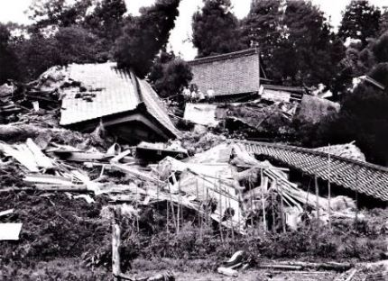
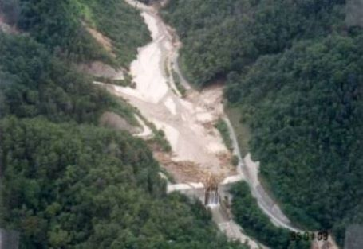
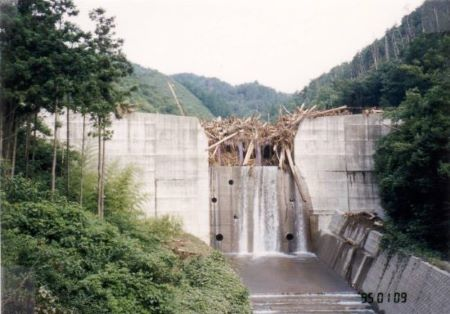

砂防の父
赤木正雄（あかぎ まさお）
人物紹介
赤木正雄は日本の砂防の重要さをいち早く説いた人物で「砂防の父」、「砂防の神様」と称されます。
![](https://lh3.googleusercontent.com/3ox7IXdiC-YmYKeQBpqz2ufV6PmBBOCpd8kgRhgCEdsIZlvfXp5qNEXFQf_xtbNnQmUJiAmbnYx8-AGR45nU04dPxM0ncdBSvgXeeNOFPUviZUpuzaj4iFeYw2s4jMEkv-0Hciz1nLCfig4cp4ywpvbSMAys3n_8fbw3p3HhACkwnEPWE99KXLMGIRLsMtH_4m5SeStM1WAQF9hpSJTmp88hJvwz0KJbx1VZSkss5zeWEQLnx7otkxijxu39lFNIerIGh0lsfylRdtas4WCAGiyb3ss5BMcDjCbo66RK4LNCjFTWgvNQM2dVilQ3HaacDtSjDnHf2PTQbqfRgU06LFEjMPcM8MykHg0k18gi2f_sUTFJhsCtZTgI2x8iTUaH54UNm077wP7c6fmkNN81g6YuyETT2Gga2VFXZjPylhVCu8mZF8qxIycaDtdHh8NkXdgAyJ9K-u7e5GRritcgOJBibGM3gxuxrUQqSPTWZg7zZF7KEBO2qf5Y6Uy2ChziXlYbTIQ_9kXa3DqHY3qQ5VLKET5fIG8JUCTITAEVe_k8ZPQah9pwmi2Zox1vpmAcR1cgijy5M-asFr8DNZ3sDXLSnXaHsHRj7VjGEgZZxDAvPf3YqwuGSzM6B6iMryRB8tFiF1-pYgWG-SMVZp7ON5R9chImcXm_A1bRLgW_ZXIaAQUH6oR4P_yfdgn5V-Kn44jdVW_Th5H-QFzqBy2VX83HqeGLhYrbeTXRBkBsBq24iMsCHRwB4miUL81sIZ7TtwYSYuvqhNm--FTnmMnArFtf0xnpdPikmdF7kiCjmkhH8AlEG4nQ4tM6GnAJRGfxPqdCxzaUWuci8RclUj0mZYE6B2ulZYYAiWiXvx_rzsmrMVKx2hCL2TPrcKeqDriI_DbCC1oU-oqKCU5lfoptp1S1dNGcamzm_in5fYD8dMBmskQQykXEv7ivayD6XDBDuNsCDyvj7KM9NIKVUA=w555-h848-no?authuser=0)
1887年（明治20年）兵庫県に生まれる。
1914年（大正3年）東京帝国大学農科大学林学科卒。
一高時代、新渡戸稲造校長の「誰か治水の大道を進まん」との訓話に感激し、
砂防事業に生涯を捧げることを決意する。
大学卒業後は内務省に入り、1923年（大正12年）砂防工学の研究のため、
オーストリアに留学し、帰国後はアルプス山系の発達した渓流工事の知識を
もって、指導にあたり、日本の各渓流の特性に応じた砂防計画論を確立、
今日の砂防技術の基礎を確立した。
赤木は砂防事業推進のため、1935年（昭和10年）に全国治水砂防協会を創設。
1946年（昭和21年）、貴族院議員に勅撰、翌1947年（昭和22年）参議院議員と
なり、1948年（昭和23年）、昭和天皇に「砂防工事と治水」をご進講し、1971年（昭和46年）文化勲章を受賞する。1972年（昭和47年）85歳で生涯を終える。
砂防（さぼう）とは
砂防とは、土砂災害から私たちの暮らしや命を守るために行われているさまざまな工事や仕事です。
- 砂防堰堤（えんてい）または、砂防ダム
- 植樹
- 復旧工事
- その他には
大雨などで水がふえると、水の力で川底や川岸の土砂が大量にけずられ、それが下流に運ばれて土砂災害を引き起こすおそれがあります。
その、けずられた土砂が下流に運ばれるのをふせぐ工作物です。
木のない山は雨などによって斜面がくずれる危険が大きいので、植樹をして地表の土砂が崩れるのを抑えます。
土砂災害が起きてしまったときには、その復旧工事も行います。
土砂災害が起こりやすい場所がないか点検したり、土砂災害が発生していないか監視したりする仕事もあります。
さらに、土砂災害が起きるしくみについて研究したり、土砂災害についての正しい知識や、いざというときの避難のしかたなどを人々に伝えたりするのも、
砂防の大切な仕事です。
土砂災害には
- 

- 
- 
サイト紹介
赤木正雄については、赤木正雄～砂防一路の熱いおもい～
砂防については、国土交通省砂防部
砂防に関しての資料は、砂防図書館
お問い合わせ
名前:砂防を知ってる？
砂防という言葉を聞いたことがある。
砂防を全く知らない。
砂防を知らないけれど、興味はある。